# Geographic packages
library(sf)
library(spData)
library(raster)
#library(tmap)
# Other packages
library(dplyr)
library(ggplot2)
library(stringr)
library(tidyr)12 Geographic Data and Mapping
Here are the libraries you will need for this chapter.
12.1 Geographic Data Vocabulary
Geographic datasets have particular features that are useful to understand before using them for analysis and graphing. There are two models of geographic data: the vector data model and the raster data model. The vector data model uses points, lines, and polygons to represent geographic areas. The raster data model uses equally-sized cells to represent geographic areas. Vector data is usually adequate for maps in economics, as it is able to represent human-defined areas precisely. That being said, raster data is needed for some contexts (e.g., environmental studies), and can provide richness and context to maps.
12.1.1 Vector Data Model
Vector data require a coordinate reference system (CRS). There are many different options for the CRS, with different countries and regions using their own systems. The differences between the different systems include the reference point (where is \((0,0)\) located) and the units of the distances (e.g., km, degrees).
The package sf contains functions to handle different types of vector data. The trio of packages sp, rgdal, and rgeos used to be the go-to packages for vector data in R, but have been superseded by sf. It has efficiency advantages and the data can be accessed more conveniently than in the other packages. You may still see examples and StackExchange forums with these other packages, however. If needed, the following code can be used to convert an sf object to a Spatial object used in the package sp, and back to an sf object.
library(sp)
example_sp <- as(example, Class = "Spatial")
example_sf <- st_as_sf(example_sp)12.2 Manage Geographic Data
Geographic data in R are stored in a data frame (or tibble) with a column for geographic data. These are called spatial data frames (or sf object). This column is called geom or geometry. Here is an example with the world dataset from spData.
data("world")
names(world) [1] "iso_a2" "name_long" "continent" "region_un" "subregion" "type"
[7] "area_km2" "pop" "lifeExp" "gdpPercap" "geom" The last variable, geom, is a list column. If you inspect the column using View(world$geom), you will see that each element is a list of varying lengths, corresponding to the vector data of the country. It is possible to interact with this sf object as one would a non-geographic tibble or data frame.
summary(world) iso_a2 name_long continent region_un
Length:177 Length:177 Length:177 Length:177
Class :character Class :character Class :character Class :character
Mode :character Mode :character Mode :character Mode :character
subregion type area_km2 pop
Length:177 Length:177 Min. : 2417 Min. :5.630e+04
Class :character Class :character 1st Qu.: 46185 1st Qu.:3.755e+06
Mode :character Mode :character Median : 185004 Median :1.040e+07
Mean : 832558 Mean :4.282e+07
3rd Qu.: 621860 3rd Qu.:3.075e+07
Max. :17018507 Max. :1.364e+09
NA's :10
lifeExp gdpPercap geom
Min. :50.62 Min. : 597.1 MULTIPOLYGON :177
1st Qu.:64.96 1st Qu.: 3752.4 epsg:4326 : 0
Median :72.87 Median : 10734.1 +proj=long...: 0
Mean :70.85 Mean : 17106.0
3rd Qu.:76.78 3rd Qu.: 24232.7
Max. :83.59 Max. :120860.1
NA's :10 NA's :17 attributes(world)$names
[1] "iso_a2" "name_long" "continent" "region_un" "subregion" "type"
[7] "area_km2" "pop" "lifeExp" "gdpPercap" "geom"
$row.names
[1] 1 2 3 4 5 6 7 8 9 10 11 12 13 14 15 16 17 18
[19] 19 20 21 22 23 24 25 26 27 28 29 30 31 32 33 34 35 36
[37] 37 38 39 40 41 42 43 44 45 46 47 48 49 50 51 52 53 54
[55] 55 56 57 58 59 60 61 62 63 64 65 66 67 68 69 70 71 72
[73] 73 74 75 76 77 78 79 80 81 82 83 84 85 86 87 88 89 90
[91] 91 92 93 94 95 96 97 98 99 100 101 102 103 104 105 106 107 108
[109] 109 110 111 112 113 114 115 116 117 118 119 120 121 122 123 124 125 126
[127] 127 128 129 130 131 132 133 134 135 136 137 138 139 140 141 142 143 144
[145] 145 146 147 148 149 150 151 152 153 154 155 156 157 158 159 160 161 162
[163] 163 164 165 166 167 168 169 170 171 172 173 174 175 176 177
$sf_column
[1] "geom"
$agr
iso_a2 name_long continent region_un subregion type area_km2 pop
<NA> <NA> <NA> <NA> <NA> <NA> <NA> <NA>
lifeExp gdpPercap
<NA> <NA>
Levels: constant aggregate identity
$class
[1] "sf" "tbl_df" "tbl" "data.frame"worldSimple feature collection with 177 features and 10 fields
Geometry type: MULTIPOLYGON
Dimension: XY
Bounding box: xmin: -180 ymin: -89.9 xmax: 180 ymax: 83.64513
Geodetic CRS: WGS 84
# A tibble: 177 × 11
iso_a2 name_long continent region_un subregion type area_km2 pop lifeExp
* <chr> <chr> <chr> <chr> <chr> <chr> <dbl> <dbl> <dbl>
1 FJ Fiji Oceania Oceania Melanesia Sove… 1.93e4 8.86e5 70.0
2 TZ Tanzania Africa Africa Eastern … Sove… 9.33e5 5.22e7 64.2
3 EH Western … Africa Africa Northern… Inde… 9.63e4 NA NA
4 CA Canada North Am… Americas Northern… Sove… 1.00e7 3.55e7 82.0
5 US United S… North Am… Americas Northern… Coun… 9.51e6 3.19e8 78.8
6 KZ Kazakhst… Asia Asia Central … Sove… 2.73e6 1.73e7 71.6
7 UZ Uzbekist… Asia Asia Central … Sove… 4.61e5 3.08e7 71.0
8 PG Papua Ne… Oceania Oceania Melanesia Sove… 4.65e5 7.76e6 65.2
9 ID Indonesia Asia Asia South-Ea… Sove… 1.82e6 2.55e8 68.9
10 AR Argentina South Am… Americas South Am… Sove… 2.78e6 4.30e7 76.3
# ℹ 167 more rows
# ℹ 2 more variables: gdpPercap <dbl>, geom <MULTIPOLYGON [°]>The attributes of world show the variable and row names, the name of the sf column, the attribute-geometry-relationship (agr), and the information about the object itself (class). Notably, there are some geographic characteristics attached to the data: the geometry type (most commonly, POINT, LINESTRING, POLYGON, MULTIPOINT, MULTILINESTRING, MULTIPOLYGON, GEOMETRYCOLLECTION), the dimension, the bbox (limits of the plot), the CRS, and the name of the geographic column.
12.2.1 Load Spatial Data
As seen above, it is possible to load geographic data built-in to R or other packages using data(). There are other packages with more complete data, rather than small examples. For example, the package osmdata connects you to the OpenStreetMap API, the package rnoaa imports NOAA climate data, and rWBclimate imports World Bank data. If you need any geographic data that might be collected by a governmental agency, check to see if there is an R package before downloading it. There may be some efficiency advantages to using the package.
You can also import geographic data into R directly from your computer. These will usually be stored in spatial databases, often with file extensions that one would also use in ArcGIS or a related program. The most popular format is ESRI Shapefile (.shp). The function to import data is st_read(). To see what types of files can be imported with that function, check st_drivers().
sf_drivers <- st_drivers()
head(sf_drivers)chi_streets <- st_read("Data/Major_Streets/Major_Streets.shp")Reading layer `Major_Streets' from data source
`/Users/aziff/Desktop/1_PROJECTS_W/projects/data-science-for-economic-and-social-issues.github.io/Data/Major_Streets/Major_Streets.shp'
using driver `ESRI Shapefile'
Simple feature collection with 16065 features and 65 fields
Geometry type: LINESTRING
Dimension: XY
Bounding box: xmin: 1093384 ymin: 1813892 xmax: 1205147 ymax: 1951666
Projected CRS: NAD83 / Illinois East (ftUS)head(chi_streets[, 1:10], 3)Simple feature collection with 3 features and 10 fields
Geometry type: LINESTRING
Dimension: XY
Bounding box: xmin: 1163267 ymin: 1887115 xmax: 1180175 ymax: 1904103
Projected CRS: NAD83 / Illinois East (ftUS)
OBJECTID FNODE_ TNODE_ LPOLY_ RPOLY_ LENGTH TRANS_ TRANS_ID SOURCE_ID
1 1 16580 16726 0 0 519.31945 52842 115733 15741
2 2 18237 18363 0 0 432.44697 45410 149406 49489
3 3 12874 12840 0 0 80.97939 23831 149515 49599
OLD_TRANS_ geometry
1 118419 LINESTRING (1163267 1893234...
2 160784 LINESTRING (1176733 1887541...
3 152590 LINESTRING (1180163 1904023...See st_write() to output a shapefile, or other type of spatial data file. The function saveRDS() is very useful here as well, as it compresses the files.
12.2.2 Attribute Data
The non-spatial (or attribute) data can be treated as you would treat any other data frame or tibble. You can use the tidyverse or built-in functions to clean, summarize, and otherwise manage the attribute data.
There is are a few details that can prevent frustration.
Both
rasteranddplyrhave the functionselect(). If you haverasterloaded, make sure you are specifyingdplyr::select()when you want thetidyversefunction.If you want to drop the spatial element of the dataset, this can be done with
st_drop_geometry(). If you are not using the data for its spatial elements, you should drop the geometry as it the list column can take up a lot of memory.
world_tib <- st_drop_geometry(world)
names(world_tib) [1] "iso_a2" "name_long" "continent" "region_un" "subregion" "type"
[7] "area_km2" "pop" "lifeExp" "gdpPercap"12.2.3 CRS
The CRS can be accessed with an ESPG code (espg) or a projection (proj4string). The ESPG is usually shorter, but less flexible than the analogous projection. To inspect the CRS of an sf object, use the st_crs() function.
st_crs(world)The CRS can either be geographic (i.e., latitude and longitude with degrees) or projected. Many of the functions used for sf objects assume that there is some CRS, and it may be necessary to set one. Operations involving distances depend heavily on the projection, and may not work with geographic CRSs.
london <- tibble(lon = -0.1, lat = 51.5) %>%
st_as_sf(coords = c("lon", "lat"))
st_is_longlat(london) # NA means that there is no set CRS[1] NATo set the CRS, use the st_set_crs() function.
london <- st_set_crs(london, 4326)
st_is_longlat(london)[1] TRUEst_crs(london)Coordinate Reference System:
User input: EPSG:4326
wkt:
GEOGCRS["WGS 84",
ENSEMBLE["World Geodetic System 1984 ensemble",
MEMBER["World Geodetic System 1984 (Transit)"],
MEMBER["World Geodetic System 1984 (G730)"],
MEMBER["World Geodetic System 1984 (G873)"],
MEMBER["World Geodetic System 1984 (G1150)"],
MEMBER["World Geodetic System 1984 (G1674)"],
MEMBER["World Geodetic System 1984 (G1762)"],
MEMBER["World Geodetic System 1984 (G2139)"],
MEMBER["World Geodetic System 1984 (G2296)"],
ELLIPSOID["WGS 84",6378137,298.257223563,
LENGTHUNIT["metre",1]],
ENSEMBLEACCURACY[2.0]],
PRIMEM["Greenwich",0,
ANGLEUNIT["degree",0.0174532925199433]],
CS[ellipsoidal,2],
AXIS["geodetic latitude (Lat)",north,
ORDER[1],
ANGLEUNIT["degree",0.0174532925199433]],
AXIS["geodetic longitude (Lon)",east,
ORDER[2],
ANGLEUNIT["degree",0.0174532925199433]],
USAGE[
SCOPE["Horizontal component of 3D system."],
AREA["World."],
BBOX[-90,-180,90,180]],
ID["EPSG",4326]]If you are changing the CRS rather than setting one, use the st_transform() function. This is necessary when comparing two sf objects with different projections (a common occurrence).
london_27700 <- st_transform(london, 27700)
st_distance(london, london_27700)Error in st_distance(london, london_27700): st_crs(x) == st_crs(y) is not TRUEThe most common geographic CRS is WGS84, or EPSG code 4326. When in doubt, this may be a good place to start. Selecting a projected CRS requires more context of the specific data. Different sources will use different projections. See chapter 6.3 of Lovelace, Nowosad, and Muenchow (2021) and the EPSG repsitory for more information on this.
12.2.4 Spatial Operations
Spatial subsetting involves selecting features based on if they relate to other objects. It is analogous to attribute subsetting. As an example, we will use the New Zealand data.
# Map of New Zealand and demographic data
data("nz")
names(nz)[1] "Name" "Island" "Land_area" "Population"
[5] "Median_income" "Sex_ratio" "geom" plot(nz[1])# 101 highest points in new Zealand
data("nz_height")
names(nz_height)[1] "t50_fid" "elevation" "geometry" Whereas in attribute subsetting, with the general format x[y, ], the y would be a logical value, integer, or character string. In spatial subsetting, the y is an sf object itself.
canterbury <- nz %>%
filter(Name == "Canterbury")
canterbury_height <- nz_height[canterbury, ]There are different options for operators for subsetting. Intersects is the default, and is quite general. For example, if the object touches, crosses, or is within, the object will also intersect. Here are some examples of specifying the operator using the op argument.
nz_height[canterbury, , op = st_intersects]Simple feature collection with 70 features and 2 fields
Geometry type: POINT
Dimension: XY
Bounding box: xmin: 1365809 ymin: 5158491 xmax: 1654899 ymax: 5350463
Projected CRS: NZGD2000 / New Zealand Transverse Mercator 2000
First 10 features:
t50_fid elevation geometry
5 2362630 2749 POINT (1378170 5158491)
6 2362814 2822 POINT (1389460 5168749)
7 2362817 2778 POINT (1390166 5169466)
8 2363991 3004 POINT (1372357 5172729)
9 2363993 3114 POINT (1372062 5173236)
10 2363994 2882 POINT (1372810 5173419)
11 2363995 2796 POINT (1372579 5173989)
13 2363997 3070 POINT (1373796 5174144)
14 2363998 3061 POINT (1373955 5174231)
15 2363999 3077 POINT (1373984 5175228)nz_height[canterbury, , op = st_disjoint]Simple feature collection with 31 features and 2 fields
Geometry type: POINT
Dimension: XY
Bounding box: xmin: 1204143 ymin: 5048309 xmax: 1822492 ymax: 5650492
Projected CRS: NZGD2000 / New Zealand Transverse Mercator 2000
First 10 features:
t50_fid elevation geometry
1 2353944 2723 POINT (1204143 5049971)
2 2354404 2820 POINT (1234725 5048309)
3 2354405 2830 POINT (1235915 5048745)
4 2369113 3033 POINT (1259702 5076570)
12 2363996 2759 POINT (1373264 5175442)
25 2364028 2756 POINT (1374183 5177165)
26 2364029 2800 POINT (1374469 5176966)
27 2364031 2788 POINT (1375422 5177253)
46 2364166 2782 POINT (1383006 5181085)
47 2364167 2905 POINT (1383486 5181270)nz_height[canterbury, , op = st_within]Simple feature collection with 70 features and 2 fields
Geometry type: POINT
Dimension: XY
Bounding box: xmin: 1365809 ymin: 5158491 xmax: 1654899 ymax: 5350463
Projected CRS: NZGD2000 / New Zealand Transverse Mercator 2000
First 10 features:
t50_fid elevation geometry
5 2362630 2749 POINT (1378170 5158491)
6 2362814 2822 POINT (1389460 5168749)
7 2362817 2778 POINT (1390166 5169466)
8 2363991 3004 POINT (1372357 5172729)
9 2363993 3114 POINT (1372062 5173236)
10 2363994 2882 POINT (1372810 5173419)
11 2363995 2796 POINT (1372579 5173989)
13 2363997 3070 POINT (1373796 5174144)
14 2363998 3061 POINT (1373955 5174231)
15 2363999 3077 POINT (1373984 5175228)nz_height[canterbury, , op = st_touches]Simple feature collection with 0 features and 2 fields
Bounding box: xmin: NA ymin: NA xmax: NA ymax: NA
Projected CRS: NZGD2000 / New Zealand Transverse Mercator 2000
[1] t50_fid elevation geometry
<0 rows> (or 0-length row.names)Grouping for creating summary statistics or other calculations can be done using built-in functions (aggregate) or dplyr functions. In aggregate, the by argument is the grouping source and the x argument is the target output.
# Built-in
nz_avgheight <- aggregate(x = nz_height, by = nz, FUN = mean)
nz_avgheightSimple feature collection with 16 features and 2 fields
Geometry type: MULTIPOLYGON
Dimension: XY
Bounding box: xmin: 1090144 ymin: 4748537 xmax: 2089533 ymax: 6191874
Projected CRS: NZGD2000 / New Zealand Transverse Mercator 2000
First 10 features:
t50_fid elevation geometry
1 NA NA MULTIPOLYGON (((1745493 600...
2 NA NA MULTIPOLYGON (((1803822 590...
3 2408405 2734.333 MULTIPOLYGON (((1860345 585...
4 NA NA MULTIPOLYGON (((2049387 583...
5 NA NA MULTIPOLYGON (((2024489 567...
6 NA NA MULTIPOLYGON (((2024489 567...
7 NA NA MULTIPOLYGON (((1740438 571...
8 2408394 2777.000 MULTIPOLYGON (((1866732 566...
9 NA NA MULTIPOLYGON (((1881590 548...
10 2368390 2889.455 MULTIPOLYGON (((1557042 531...plot(nz_avgheight["elevation"])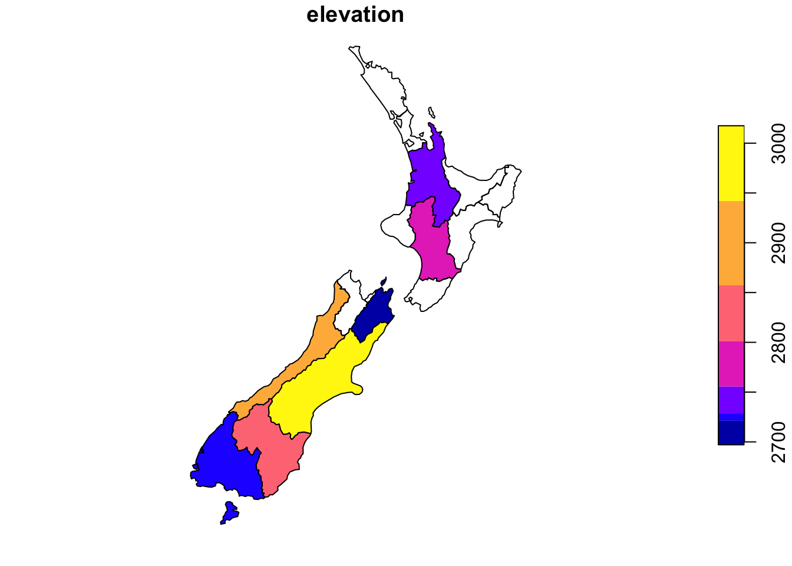
# dplyr
nz_avgheight <- nz %>%
st_join(nz_height) %>%
group_by(Name) %>%
summarise(elevation = mean(elevation, na.rm = TRUE))
plot(nz_avgheight["elevation"])It is possible to measure the geographic distance between spatial objects using st_distance(). Notice that it returns the units!
# Get the highest point in New Zealand
nz_highest <- nz_height %>%
slice_max(order_by = elevation)
# Get the centroid of Canterbury
canterbury_centroid <- nz %>%
filter(Name == "Canterbury") %>%
st_centroid()Warning: st_centroid assumes attributes are constant over geometries# Calculate the distance between these two points
st_distance(nz_highest, canterbury_centroid)Units: [m]
[,1]
[1,] 115540The function st_distance() can also be used to calculate distance matrices.
# Get the 3 highest points in New Zealand
nz_3highest <- nz_height %>%
arrange(desc(elevation)) %>%
slice_head(n = 3)
# Get the centroids of all states
all_centroid <- nz %>%
st_centroid()Warning: st_centroid assumes attributes are constant over geometries# Calculate the distance matrix with centroids
st_distance(nz_3highest, all_centroid)Units: [m]
[,1] [,2] [,3] [,4] [,5] [,6] [,7] [,8]
[1,] 951233.0 856625.2 765070.3 825245.2 881491.0 723575.1 593453.8 621157.3
[2,] 952019.6 857339.3 765680.7 825764.2 881937.4 724002.7 594057.0 621634.9
[3,] 951563.1 856927.5 765332.0 825470.7 881687.6 723764.2 593712.6 621366.3
[,9] [,10] [,11] [,12] [,13] [,14] [,15] [,16]
[1,] 520471.9 108717.6 115540.0 191499.2 294665.7 315036.6 373697.0 348221.3
[2,] 520789.4 109366.2 115390.2 190666.6 294032.1 315602.5 374195.6 348620.9
[3,] 520616.6 108993.9 115493.6 191151.6 294394.6 315280.6 373914.3 348399.0# Without centroids
st_distance(nz_3highest, nz)Units: [m]
[,1] [,2] [,3] [,4] [,5] [,6] [,7] [,8]
[1,] 865750.4 797431.4 659107.4 730881.6 807936.8 630429.8 551289.0 522987.7
[2,] 866509.0 798128.8 659627.6 731367.7 808407.5 630769.4 551922.6 523389.0
[3,] 866069.8 797727.2 659333.3 731094.0 808143.1 630583.5 551559.8 523166.2
[,9] [,10] [,11] [,12] [,13] [,14] [,15] [,16]
[1,] 447927.2 2184.049 0 54305.52 163297.5 232290.5 355518.1 263784.7
[2,] 448273.4 2991.754 0 53735.24 163011.5 232811.0 356027.2 264131.4
[3,] 448083.5 2507.071 0 54058.45 163164.7 232516.4 355739.6 263941.1Other geographic measurements include st_area() and st_length().
# Area
nz %>%
group_by(Name) %>%
st_area()Units: [m^2]
[1] 12890576439 4911565037 24588819863 12271015945 8364554416 14242517871
[7] 7313990927 22239039580 8149895963 23409347790 45326559431 31903561583
[13] 32154160601 9594917765 408075351 10464846864# Length
seine %>%
group_by(name) %>%
st_length()Units: [m]
[1] 363610.5 635526.7 219244.612.2.5 Geometry Operations
The functions in this section interact with the geom variable.
The function st_simplify() reduces the number of verticies in a spatial object. This results in a “smoothing” of the geography as well as an object that takes up less memory. Use ms_simplify() from the rmapshaper to avoid spacing issues.
plot(nz[1])plot(st_simplify(nz[1], dTolerance = 10000)) #Smooth by 10 km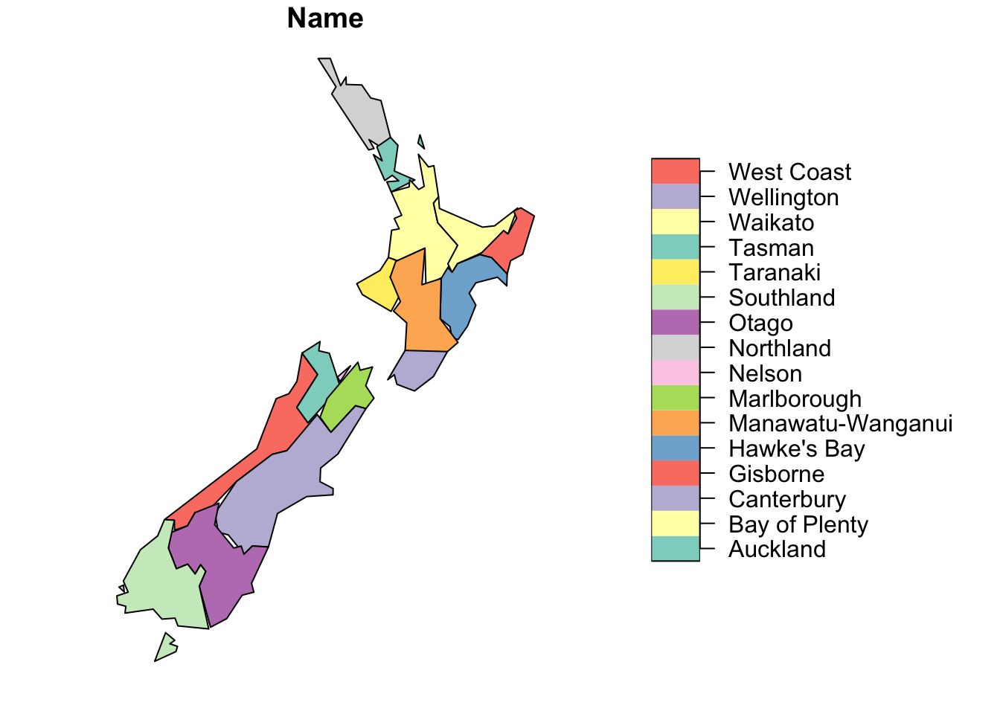
We have already seen how to compute the centroid.
all_centroid <- st_centroid(nz)Warning: st_centroid assumes attributes are constant over geometries# Plot
plot(nz[1], reset = FALSE)
plot(st_geometry(all_centroid), add = TRUE, pch = 3, cex = 1.4)The function st_point_on_surface() alters the point so that a point appears on the parent object. This may be more useful than centroids for labels.
nz_ptsonsurface <- st_point_on_surface(nz)Warning: st_point_on_surface assumes attributes are constant over geometriesplot(nz[1], reset = FALSE)
plot(st_geometry(nz_ptsonsurface), add = TRUE, pch = 3, cex = 1.4, col = "red")
plot(st_geometry(all_centroid), add = TRUE, pch = 3, cex = 1.4) # Add centroids for comparison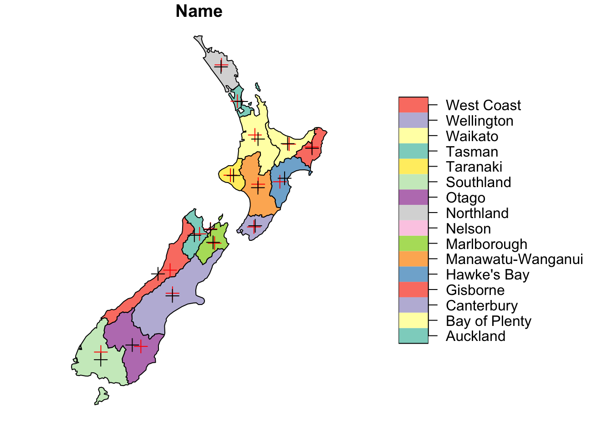
The function st_buffer() allows you to compute buffers around geographies. It returns the same sf object, but the geometry column now contains a buffer around the original geometry of the specified distance (in meters).
nz_height_buff_5km <- st_buffer(nz_height, dist = 5000)
plot(nz[1], reset = FALSE)
plot(nz_height_buff_5km[1], add = TRUE)nz_height_buff_50km <- st_buffer(nz_height, dist = 50000)
plot(nz[1], reset = FALSE)
plot(nz_height_buff_50km[1], add = TRUE)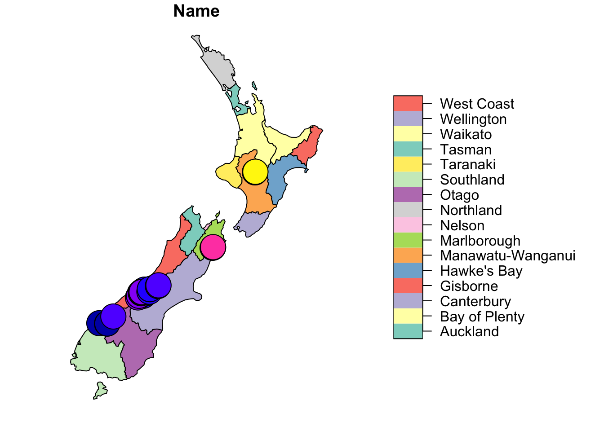
Affine transformations can be done with spatial data. They should be approached with caution as angles and length are not always preserved even though lines are.
nz_g <- st_geometry(nz)
# Shift
nz_shift <- nz_g + c(0, 100000)
# Scaling around the centroid
nz_scale <- (nz_g - st_centroid(nz_g)) * 0.5 + st_centroid(nz_g)
# Set the new geography
nz_changed <- st_set_geometry(nz, nz_shift)plot(nz_g, reset = FALSE)
plot(nz_shift, col = "magenta", add = TRUE)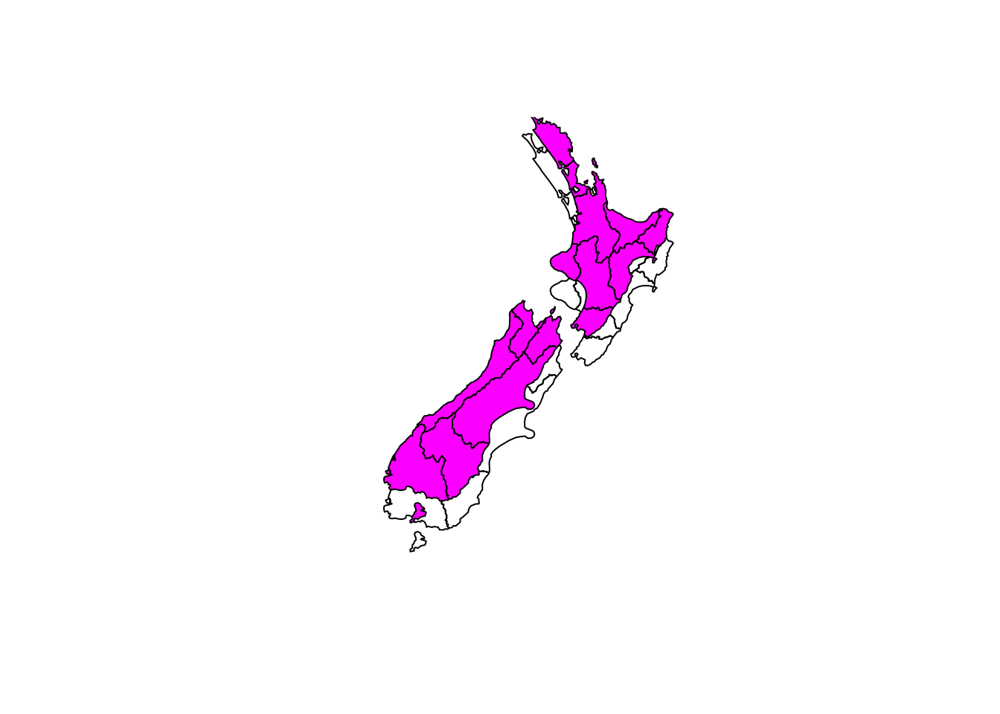
plot(nz_g, reset = FALSE)
plot(nz_scale, col = "magenta", add = TRUE)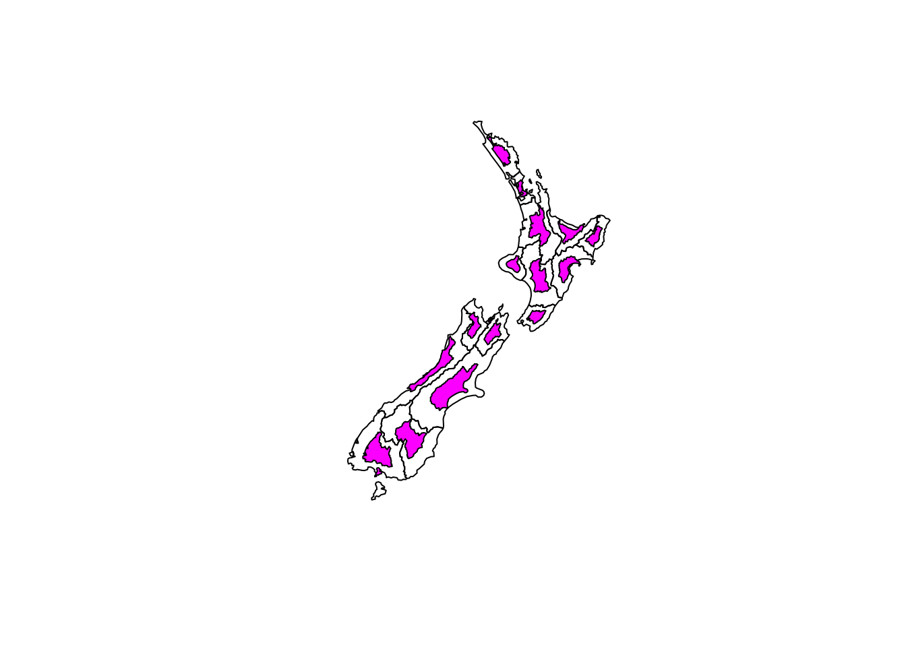
Spatial subsetting with lines or polygons involving changes to the geometry columns is called spatial clipping. Forillustaration, consider two circles created as follows.
# Create two points and buffers
b <- st_sfc(st_point(c(0, 1)), st_point(c(1, 1)))
b <- st_buffer(b, dist = 1)
x <- b[1]
y <- b[2]
# Plot
plot(b)
text(x = c(-0.5, 1.5), y = 1, labels = c("x", "y"))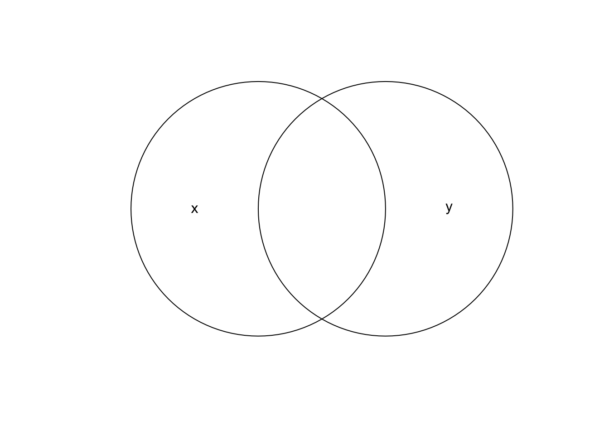
With these circles, we can see the possible spatial clippings.
# Intersection
x_int_y <- st_intersection(x, y)
plot(b)
text(x = c(-0.5, 1.5), y = 1, labels = c("x", "y"))
plot(x_int_y, add = TRUE, col = "steelblue")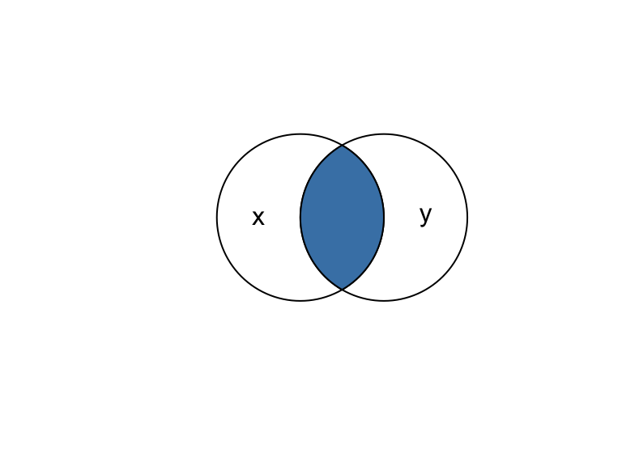
# Difference
x_diff_y <- st_difference(x, y)
plot(b)
text(x = c(-0.5, 1.5), y = 1, labels = c("x", "y"))
plot(x_diff_y, add = TRUE, col = "steelblue")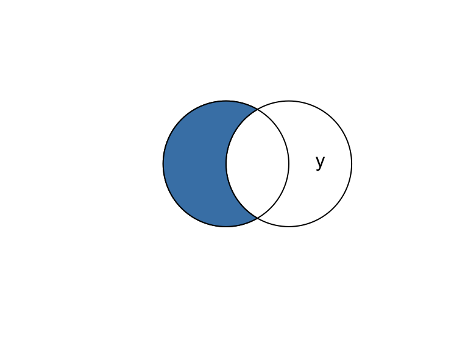
y_diff_x <- st_difference(y, x)
plot(b)
text(x = c(-0.5, 1.5), y = 1, labels = c("x", "y"))
plot(y_diff_x, add = TRUE, col = "steelblue")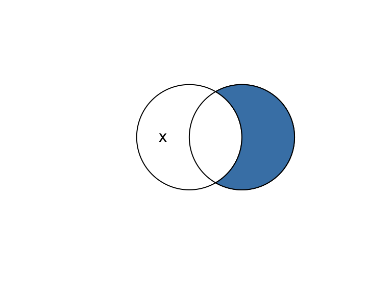
# Both differences
x_sym_y <- st_sym_difference(x, y)
plot(b)
text(x = c(-0.5, 1.5), y = 1, labels = c("x", "y"))
plot(x_sym_y, add = TRUE, col = "steelblue")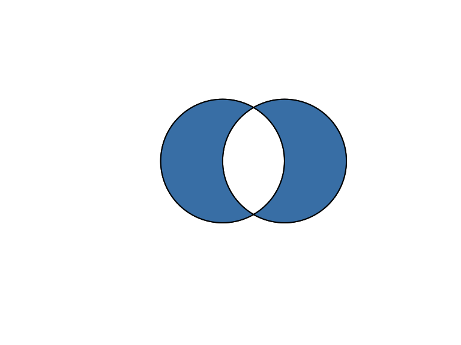
# Union
x_uni_y <- st_union(x, y)
plot(b)
text(x = c(-0.5, 1.5), y = 1, labels = c("x", "y"))
plot(x_uni_y, add = TRUE, col = "steelblue")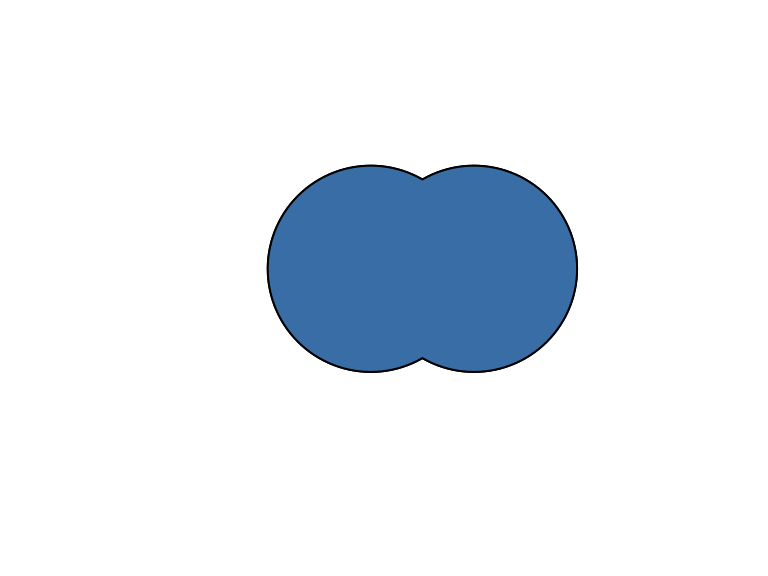
The function st_sample() randomly selects points within an area.
b_sample <- st_sample(b, size = 10)
plot(b)
plot(b_sample, add = TRUE)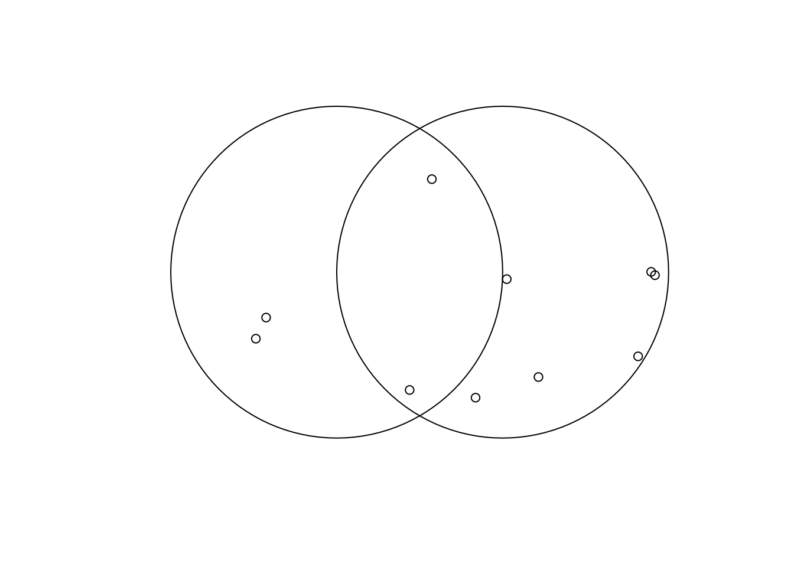
12.2.6 Merge
12.2.6.1 Attribute
Suppose you have two datasets with a common identifier variable (e.g., ID, name). It is possible to merge these datasets with this variable following chapter 3, even if there are spatial columns. Here is an example.
# Load coffee_data
data("coffee_data")
names(coffee_data)[1] "name_long" "coffee_production_2016" "coffee_production_2017"class(coffee_data)[1] "tbl_df" "tbl" "data.frame"# Join the world and coffee data
world_coffee <- full_join(world, coffee_data, by = "name_long")
# Plot coffee production 2017
plot(world_coffee["coffee_production_2017"])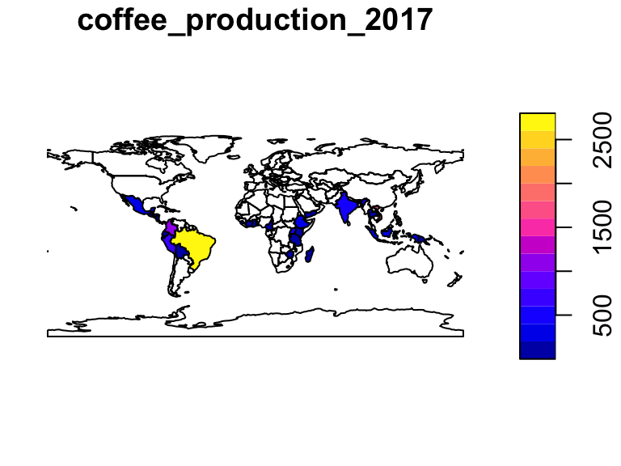
12.2.6.2 Spatial
If you have two (or more) data sets with spatial elements, it is natural to think about merging them based on spatial concepts. Instead of sharing an identifier variable, they may share geographic space. The function st_join() allows for many types of spatial overlays. For example, it is possible to join points to multipolygons.
names(nz)[1] "Name" "Island" "Land_area" "Population"
[5] "Median_income" "Sex_ratio" "geom" names(nz_height)[1] "t50_fid" "elevation" "geometry" nz_joined <- st_join(nz, nz_height)The default is a left join. Inspecting the data reveals that regions with more than one point in nz_height appear more than once. The corresponding attribute data from nz_height are added to nz. The geography type is multipolygon, following the first argument’s type. If we switch the order, the geography type changes to point.
nz_joined_rev <- st_join(nz_height, nz)To do an inner join, set left = FALSE. The default operator is st_intersects(). To change the operator, change the join argument. The sf cheat sheet is a great resource to think about spatial overlays and the possible operators.
There may be contexts in which two spatial datasets are related, but do not actually contain overlapping elements. Augmenting the st_join() function allows for a buffer distance to create near matches. Here is an example using the cycle_hire and cycle_hire_osm datasets from the spData package.
data("cycle_hire")
data("cycle_hire_osm")
any(st_touches(cycle_hire, cycle_hire_osm, sparse = FALSE))[1] FALSE# Change the CRS to be able to use meters
cycle_hire <- cycle_hire %>%
st_transform(crs = 27700)
cycle_hire_osm <- cycle_hire_osm %>%
st_transform(crs = 27700)
# Join within 20 meters
cycle_joined <- st_join(cycle_hire, cycle_hire_osm,
join = st_is_within_distance,
dist = 20)12.2.7 Practice Exercises
- The below code randomly selects ten points distributed across Earth. Create an object named
random_sfthat merges these random points with theworlddataset. In which countries did your random points land? (Review: How can you make the below code reproducible?)
# Coordinate bounds of the world
bb_world <- st_bbox(world)
random_df <- tibble(
x = runif(n = 10, min = bb_world[1], max = bb_world[3]),
y = runif(n = 10, min = bb_world[2], max = bb_world[4])
)
# Set coordinates and CRS
random_points <- random_df %>%
st_as_sf(coords = c("x", "y")) %>%
st_set_crs(4326) - We saw that 70 of the 101 highest points in New Zealand are in Canterbury. How many points in
nz_height()are within 100 km of Canterbury? - Find the geographic centroid of New Zealand. How far is it from the geographic centroid of Canterbury?
12.3 Visualize
The function plot() can be used with the sf object directly. It relies on the same arguments as for non-geographic data.
plot(world)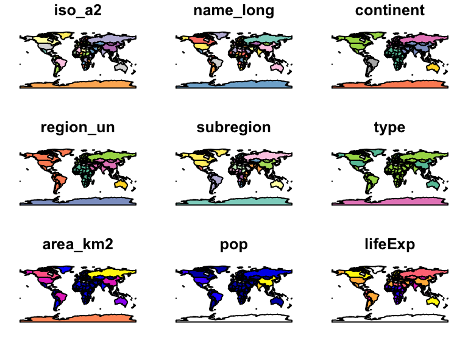
plot(world[3:6])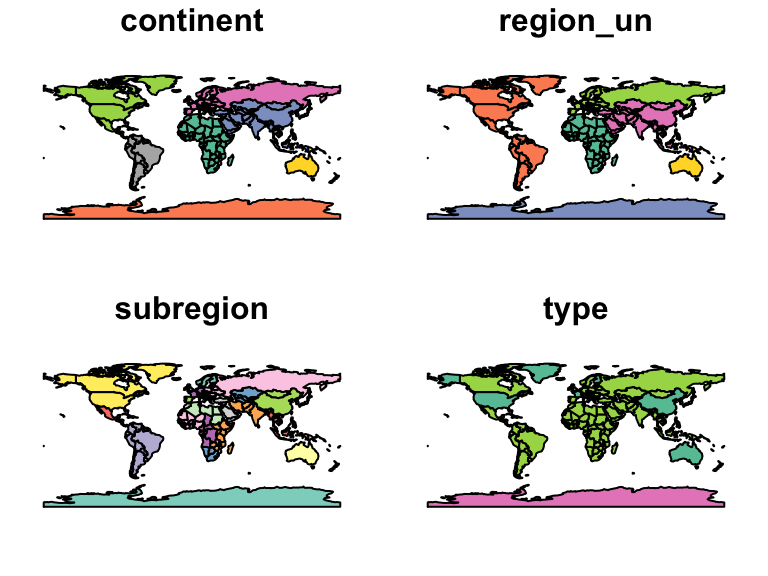
plot(world["pop"])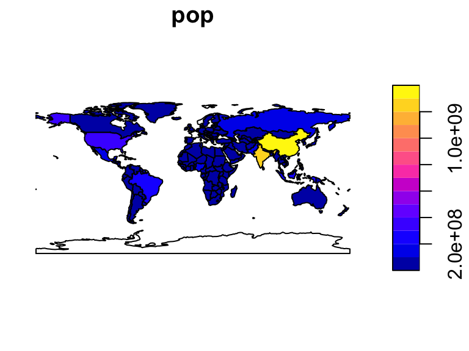
# Example adding layers
world_asia <- world[world$continent == "Asia", ] %>% st_union()
plot(world[2], reset = FALSE)
plot(world_asia, add = TRUE, col = "green")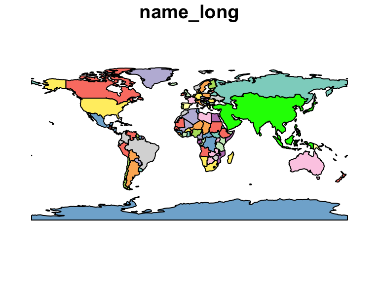
# More complex example
plot(world["continent"], reset = FALSE)
world_centroids <- st_centroid(world, of_largest_polygon = TRUE)
plot(st_geometry(world_centroids), add = TRUE, cex = sqrt(world$pop) / 10000)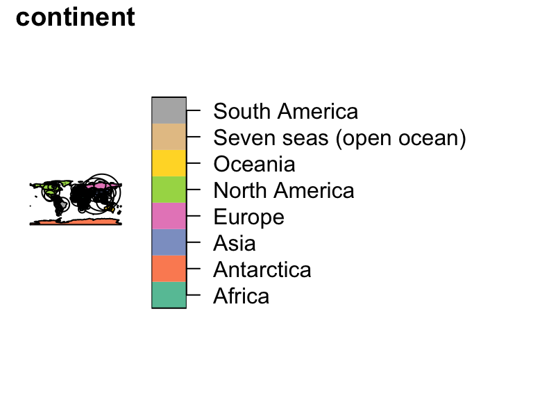
The package tmap has the same logic as ggplot2, but specialized for maps. There are options for interactive maps as well. The functions of ggplot2 can also be used with the geom geom_sf().
ggplot(nz) +
geom_sf()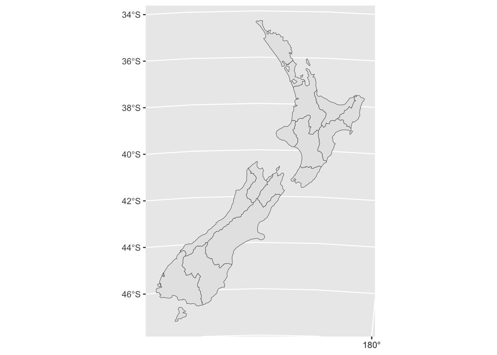
ggplot(nz) +
geom_sf(aes(fill = Population)) 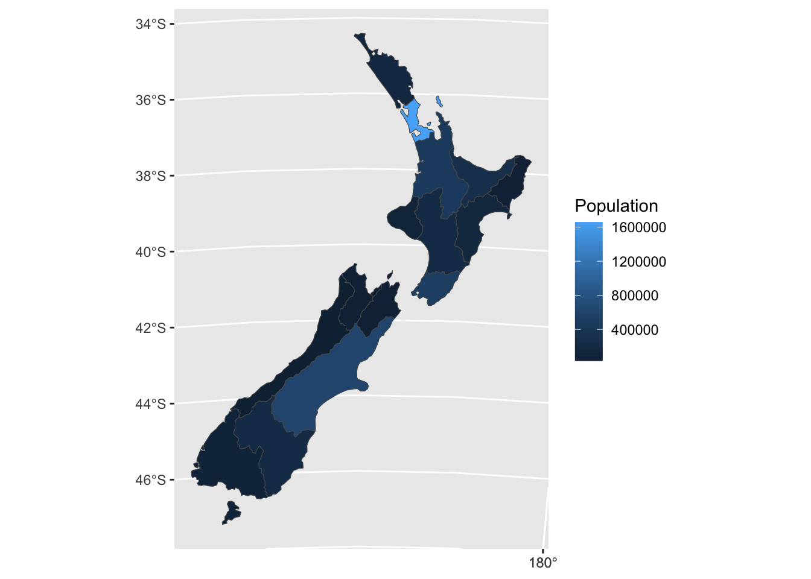
ggplot() +
geom_sf(data = nz) +
geom_sf(data = st_geometry(st_point_on_surface(nz)), aes(size = nz$Population))Warning: st_point_on_surface assumes attributes are constant over geometries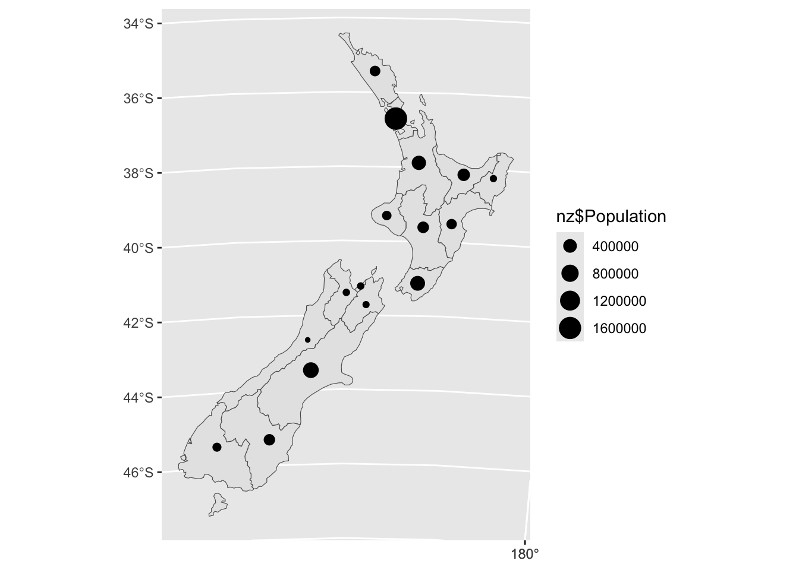
12.4 Raster Data
Raster data are comprised of equally sized cells and corresponding data values. Because there can only be one value per cell, raster data can be ill-suited to represent human-invented borders. Because of the matrix representation of the geography (rather than coordinate points), raster data is well-suited to efficiently represent continuous spatial data. The package raster allows you to load, analyze, and map raster objects.
Printing the example raster displays the raster header and information. This example raster is from Zion National Park in Utah, U.S.. Just as for vector data, the plot() function can be used with raster data.To access and set the CRS for raster objects, use projection().
Accessing and managing the attribute data of rasters is different than the usual approaches. For example, variables cannot be character strings. See chapter 3 of Lovelace, Nowosad, and Muenchow (2021) for information on this. See chapter 4 for spatial operations on raster data and chapter 5 for geometry operations on raster data.
12.5 Resources
These incredible datasets originally comes from John Snow, but have been digitized and recreated by the GeoDa Data and Lab.
12.a In-Class Activity: Spatial Analysis with John Snow
Believe it or not, you can use your R tools to recreate Dr.Snow’s analysis! In this activity, you will also learn how to use spatial data. For that, you will need the sf package.
library(ggplot2)
library(magrittr)
Attaching package: 'magrittr'The following object is masked from 'package:tidyr':
extractThe following object is masked from 'package:raster':
extractlibrary(sf)12.5.1 Geographic Data Vocabulary
Geographic datasets have particular features that are useful to understand before using them for analysis and graphing. There are two models of geographic data: the vector data model and the raster data model. The vector data model uses points, lines, and polygons to represent geographic areas. The raster data model uses equally-sized cells to represent geographic areas. Vector data is usually adequate for maps in economics, as it is able to represent human-defined areas precisely. That being said, raster data is needed for some contexts (e.g., environmental studies), and can provide richness and context to maps.
12.5.1.1 Vector Data Model
Vector data require a coordinate reference system (CRS). There are many different options for the CRS, with different countries and regions using their own systems. The differences between the different systems include the reference point (where is \((0,0)\) located) and the units of the distances (e.g., km, degrees).
The package sf contains functions to handle different types of vector data. The trio of packages sp, rgdal, and rgeos used to be the go-to packages for vector data in R, but have been superseded by sf. It has efficiency advantages and the data can be accessed more conveniently than in the other packages. You may still see examples and StackExchange forums with these other packages, however. If needed, the following code can be used to convert an sf object to a Spatial object used in the package sp, and back to an sf object.
example_sp <- as(example, Class = "Spatial")
example_sf <- st_as_sf(example_sp)12.5.2 Manage Geographic Data
Geographic data in R are stored in a data frame (or tibble) with a column for geographic data. These are called spatial data frames (or sf object) with a column called geom or geometry.
12.5.2.1 Load Spatial Data
It is possible to load geographic data built-in to R or other packages using data(). For example, the package osmdata connects you to the OpenStreetMap API, the package rnoaa imports NOAA climate data, and rWBclimate imports World Bank data. If you need any geographic data that might be collected by a governmental agency, check to see if there is an R package before downloading it. There may be some efficiency advantages to using the package.
You can also import geographic data into R directly from your computer. These will usually be stored in spatial databases, often with file extensions that one would also use in ArcGIS or a related program. The most popular format is ESRI Shapefile (.shp). The function to import data is st_read(). To see what types of files can be imported with that function, check st_drivers().
sf_drivers <- st_drivers()
head(sf_drivers)Download the zip file Snow.zip on Canvas > Modules > Module 2 > Data. Unzip the folder and navigate to the directory. Use the function st_read() to load the data. Notice that even though there are several file extensions in the folder snow1, we use the .shp file. This is called a shapefile.
deaths_house <- st_read("Data/Snow/snow1/deaths_nd_by_house.shp")Reading layer `deaths_nd_by_house' from data source
`/Users/aziff/Desktop/1_PROJECTS_W/projects/data-science-for-economic-and-social-issues.github.io/Data/Snow/snow1/deaths_nd_by_house.shp'
using driver `ESRI Shapefile'
Simple feature collection with 1852 features and 11 fields
Geometry type: POINT
Dimension: XY
Bounding box: xmin: 528996.1 ymin: 180646.9 xmax: 529696.2 ymax: 181319.9
Projected CRS: Transverse_MercatorLet us investigate the data. Notably, there are some geographic characteristics attached to the data: the geometry type (most commonly, POINT, LINESTRING, POLYGON, MULTIPOINT, MULTILINESTRING, MULTIPOLYGON, GEOMETRYCOLLECTION), the dimension, the bbox (limits of the plot), the CRS, and the name of the geographic column. Notice that the last variable, geometry, is a list column. If you inspect the column, you will see that each element is a list of varying lengths, corresponding to the vector data of the country. It is possible to interact with this sf object as one would a non-geographic tibble or data frame.
head(deaths_house)Simple feature collection with 6 features and 11 fields
Geometry type: POINT
Dimension: XY
Bounding box: xmin: 529286.4 ymin: 181061.3 xmax: 529297.4 ymax: 181084.1
Projected CRS: Transverse_Mercator
ID deaths_r deaths_nr deaths pestfield dis_pestf dis_sewers dis_bspump
1 1 0 0 0 1 10.08 10.08 125.00
2 2 1 0 1 1 14.64 14.64 119.94
3 3 0 0 0 1 18.47 18.47 116.27
4 4 0 0 0 1 22.98 22.98 112.56
5 5 0 0 0 1 27.47 27.47 109.10
6 6 5 0 5 1 32.21 32.21 105.54
death_dum COORD_X COORD_Y geometry
1 0 529286.4 181084.1 POINT (529286.4 181084.1)
2 1 529289.8 181079.7 POINT (529289.8 181079.7)
3 0 529291.7 181075.3 POINT (529291.7 181075.3)
4 0 529293.5 181070.3 POINT (529293.5 181070.3)
5 0 529295.4 181065.8 POINT (529295.4 181065.8)
6 1 529297.4 181061.3 POINT (529297.4 181061.3)According to the documentation, deaths is the total deaths per house. Let us explore this variable like we would for any other dataset.
summary(deaths_house) ID deaths_r deaths_nr deaths
Min. : 1.0 Min. : 0.0000 Min. : 0.0000 Min. : 0.0000
1st Qu.: 463.8 1st Qu.: 0.0000 1st Qu.: 0.0000 1st Qu.: 0.0000
Median : 926.5 Median : 0.0000 Median : 0.0000 Median : 0.0000
Mean : 926.5 Mean : 0.3569 Mean : 0.0243 Mean : 0.3812
3rd Qu.:1389.2 3rd Qu.: 0.0000 3rd Qu.: 0.0000 3rd Qu.: 0.0000
Max. :1852.0 Max. :12.0000 Max. :18.0000 Max. :18.0000
pestfield dis_pestf dis_sewers dis_bspump
Min. :0.00000 Min. : 7.56 Min. : 2.85 Min. : 7.26
1st Qu.:0.00000 1st Qu.:106.93 1st Qu.:11.13 1st Qu.:149.21
Median :0.00000 Median :177.17 Median :17.04 Median :203.73
Mean :0.04914 Mean :173.73 Mean :19.39 Mean :206.21
3rd Qu.:0.00000 3rd Qu.:237.94 3rd Qu.:24.69 3rd Qu.:260.60
Max. :1.00000 Max. :441.34 Max. :92.40 Max. :442.99
death_dum COORD_X COORD_Y geometry
Min. :0.0000 Min. :528996 Min. :180647 POINT :1852
1st Qu.:0.0000 1st Qu.:529247 1st Qu.:180892 epsg:NA : 0
Median :0.0000 Median :529386 Median :181005 +proj=tmer...: 0
Mean :0.1992 Mean :529371 Mean :181004
3rd Qu.:0.0000 3rd Qu.:529500 3rd Qu.:181132
Max. :1.0000 Max. :529696 Max. :181320 Combining ggplot2 and sf, we can very easily graph the geographic data.
ggplot(data = deaths_house) +
geom_sf()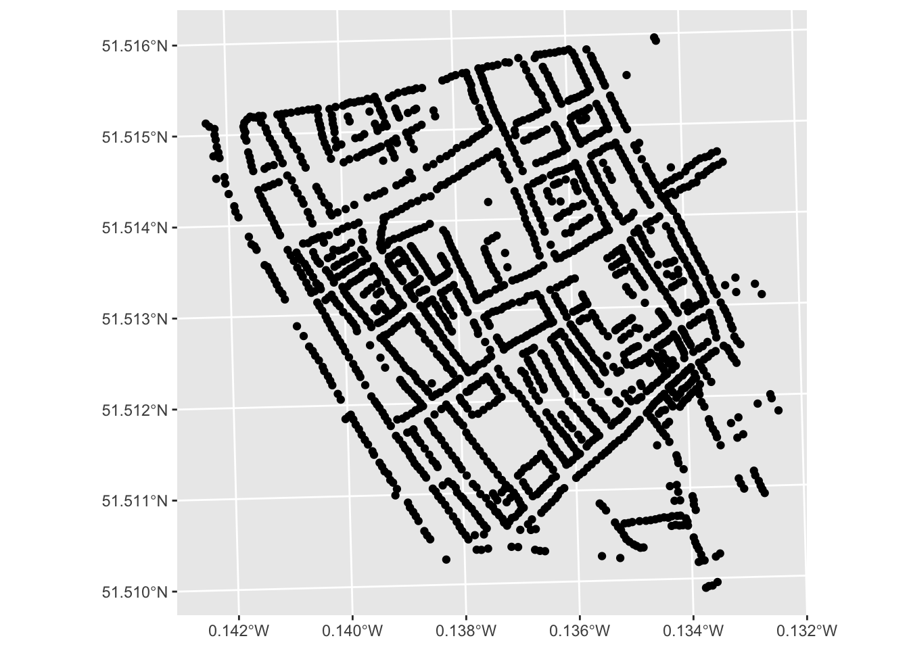
Now let us use the aes() option to understand our variables of interest.
ggplot(data = deaths_house) +
geom_sf(aes(color = as.factor(deaths)))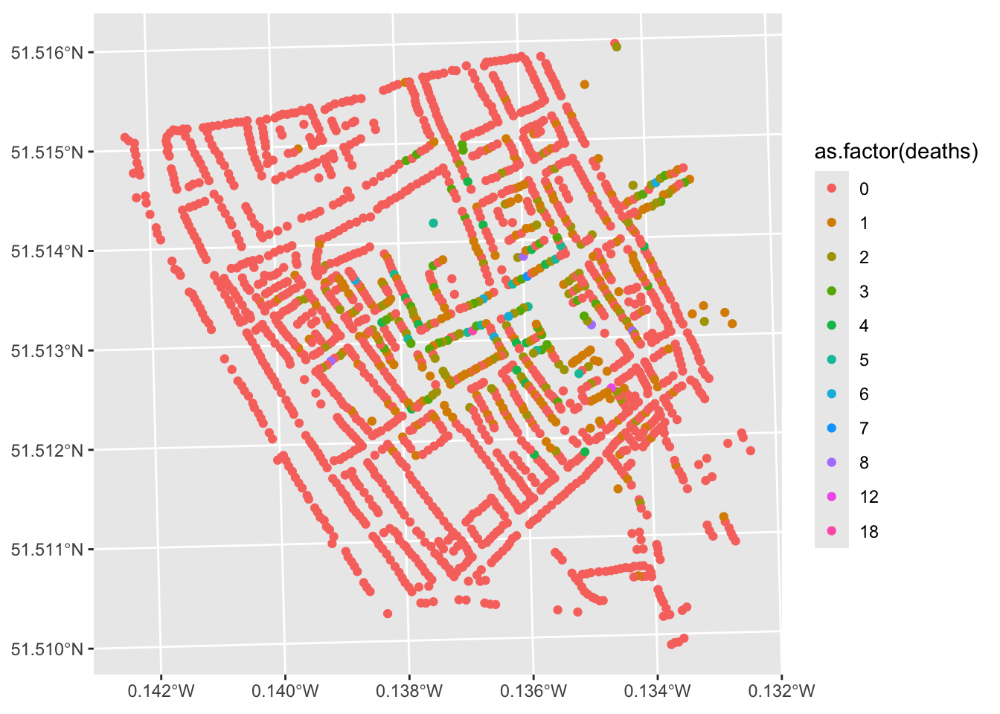
We can improve this visual by creating a binned variable.
deaths_house$deaths_bins <- cut(deaths_house$deaths,
breaks=c(0, 1, 3, 6, 9, 18),
include.lowest = TRUE)
ggplot(data = deaths_house) +
geom_sf(aes(color = deaths_bins), size = 0.8) +
scale_color_manual(values = c("grey", "green", "yellow", "orange", "red")) +
theme_bw()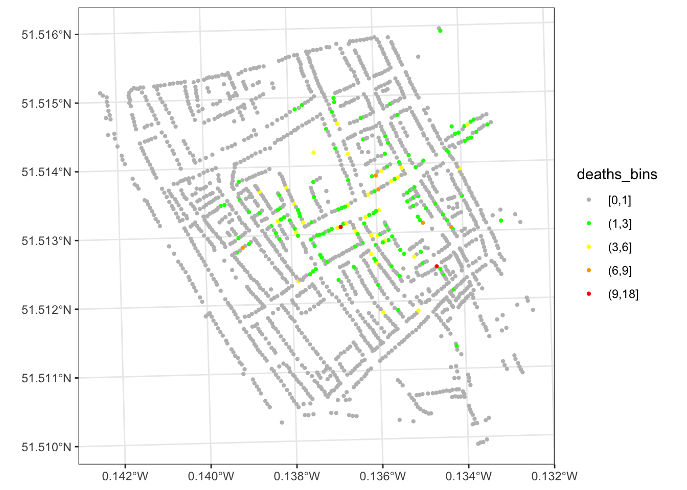
We see the houses and the number of deaths by house. But what about the pumps? Let us load that dataset too.
pumps <- st_read("Data/Snow/snow6/pumps.shp")Reading layer `pumps' from data source
`/Users/aziff/Desktop/1_PROJECTS_W/projects/data-science-for-economic-and-social-issues.github.io/Data/Snow/snow6/pumps.shp'
using driver `ESRI Shapefile'
Simple feature collection with 8 features and 4 fields
Geometry type: POINT
Dimension: XY
Bounding box: xmin: 529183.7 ymin: 180670 xmax: 529752.2 ymax: 181193.7
Projected CRS: Transverse_MercatorWe can do the same data exploration that we always do.
summary(pumps) ID name COORD_X COORD_Y
Min. :1.00 Length:8 Min. :529184 Min. :180795
1st Qu.:2.75 Class :character 1st Qu.:529270 1st Qu.:180865
Median :4.50 Mode :character Median :529400 Median :180890
Mean :4.50 Mean :529385 Mean :180947
3rd Qu.:6.25 3rd Qu.:529475 3rd Qu.:181039
Max. :8.00 Max. :529613 Max. :181194
geometry
POINT :8
epsg:NA :0
+proj=tmer...:0
We can map the data.
ggplot(data = pumps) +
geom_sf()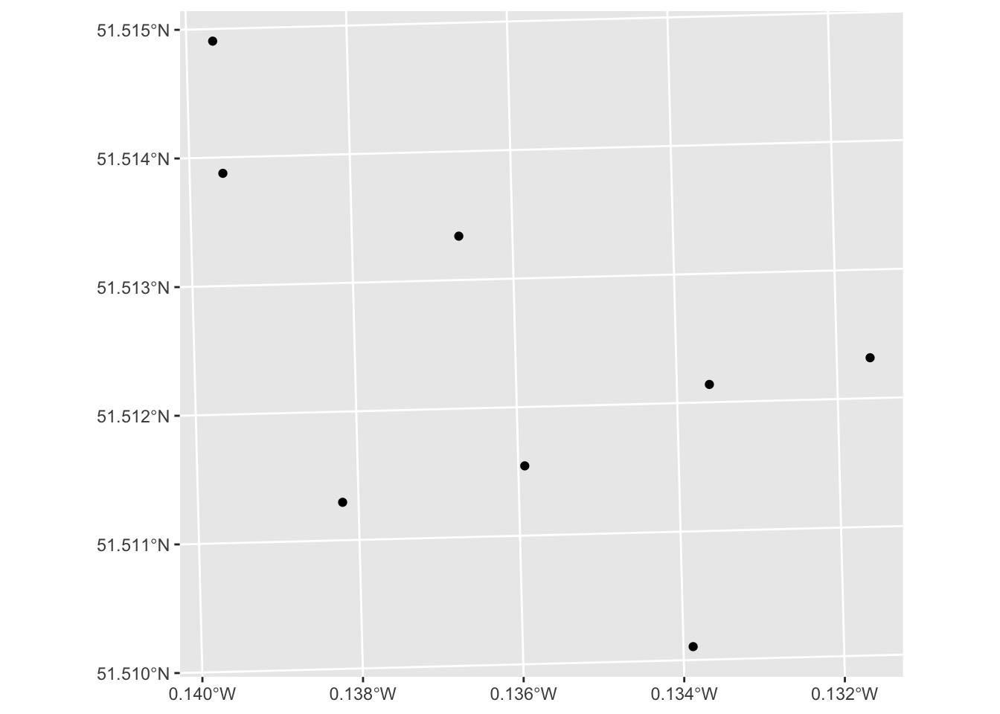
Here is where we add the spatial analysis that John Snow accomplished. We can super-impose these graphs on top of each other.
ggplot() +
geom_sf(data = deaths_house, aes(color = deaths_bins), size = 0.8) +
geom_sf(data = pumps) +
geom_sf_text(data = pumps, aes(label = name), nudge_y = -20, size = 3) +
scale_color_manual(values = c("grey", "green", "yellow", "orange", "red")) +
theme_bw()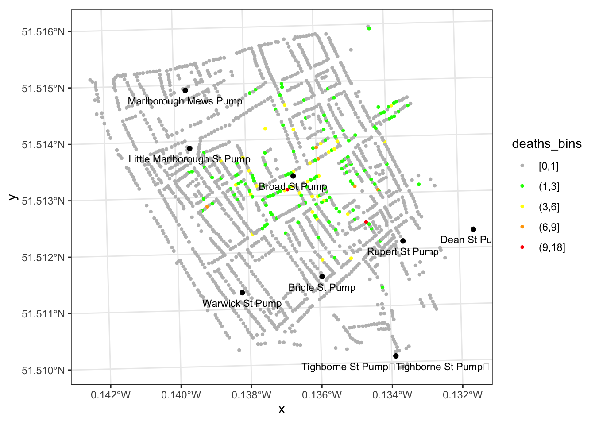
That was John Snow’s seminal map. Now, let us look at the other data he collected from the rest of London to further corroborate his theory.
sds <- st_read("Data/Snow/snow8/subdistricts.shp")Reading layer `subdistricts' from data source
`/Users/aziff/Desktop/1_PROJECTS_W/projects/data-science-for-economic-and-social-issues.github.io/Data/Snow/snow8/subdistricts.shp'
using driver `ESRI Shapefile'
Simple feature collection with 32 features and 32 fields
Geometry type: MULTIPOLYGON
Dimension: XY
Bounding box: xmin: 521033.3 ymin: 169712.5 xmax: 536916.2 ymax: 180562.5
Projected CRS: Transverse_Mercatorsummary(sds) dis_ID district sub_ID subdist
Min. : 1.000 Length:32 Min. : 1.00 Length:32
1st Qu.: 3.000 Class :character 1st Qu.: 8.75 Class :character
Median : 4.000 Mode :character Median :16.50 Mode :character
Mean : 4.844 Mean :16.50
3rd Qu.: 7.250 3rd Qu.:24.25
Max. :10.000 Max. :32.00
pop1851 pop_house supplier supplierID
Min. : 1632 Min. :5.600 Length:32 Min. :1.00
1st Qu.:11160 1st Qu.:6.100 Class :character 1st Qu.:1.00
Median :15942 Median :6.450 Mode :character Median :2.00
Mean :15217 Mean :6.753 Mean :1.75
3rd Qu.:18519 3rd Qu.:7.500 3rd Qu.:2.00
Max. :29861 Max. :9.100 Max. :3.00
perc_sou perc_lam perc_other lam_degree
Min. :0.0000 Min. :0.0000 Min. :0.0000 Length:32
1st Qu.:0.1750 1st Qu.:0.0000 1st Qu.:0.0000 Class :character
Median :0.4450 Median :0.2258 Median :0.1732 Mode :character
Mean :0.4558 Mean :0.2810 Mean :0.2632
3rd Qu.:0.6809 3rd Qu.:0.5119 3rd Qu.:0.3605
Max. :1.0000 Max. :0.8302 Max. :0.9822
NA's :1 NA's :1 NA's :1
d_overall d_sou d_lam d_pump
Min. : 0.00 Min. : 0.00 Min. : 0.000 Min. :0.0000
1st Qu.: 16.25 1st Qu.: 8.25 1st Qu.: 0.000 1st Qu.:0.0000
Median : 46.50 Median : 34.00 Median : 1.000 Median :0.0000
Mean : 47.31 Mean : 39.47 Mean : 3.062 Mean :0.9062
3rd Qu.: 71.00 3rd Qu.: 61.50 3rd Qu.: 5.250 3rd Qu.:1.0000
Max. :125.00 Max. :115.00 Max. :13.000 Max. :5.0000
d_thames d_unasc rate_sou7w rate_lam7w
Min. : 0.000 Min. :0.0000 Min. : 0.00 Min. : 0.000
1st Qu.: 0.000 1st Qu.:0.0000 1st Qu.:35.46 1st Qu.: 2.380
Median : 0.000 Median :0.0000 Median :48.87 Median : 5.889
Mean : 3.188 Mean :0.6875 Mean :45.39 Mean : 6.419
3rd Qu.: 3.250 3rd Qu.:1.0000 3rd Qu.:54.45 3rd Qu.: 9.817
Max. :35.000 Max. :5.0000 Max. :87.23 Max. :16.822
NA's :4 NA's :13
rate_oth7w deaths1849 deaths1854 rate1849
Min. : 0.000 Min. : 1.0 Min. : 0.0 Min. : 5.335
1st Qu.: 0.000 1st Qu.:113.2 1st Qu.: 75.5 1st Qu.: 95.402
Median : 3.853 Median :192.5 Median :161.0 Median :139.784
Mean :10.491 Mean :197.8 Mean :162.3 Mean :126.827
3rd Qu.:10.633 3rd Qu.:257.5 3rd Qu.:238.5 3rd Qu.:159.916
Max. :82.938 Max. :544.0 Max. :388.0 Max. :209.513
NA's :10 NA's :1 NA's :1
rate1854 pop1849 pop1854 rAvSupR_49
Min. : 0.00 Min. : 1632 Min. : 1632 Min. :130.1
1st Qu.: 53.94 1st Qu.:12021 1st Qu.:13336 1st Qu.:130.1
Median : 78.44 Median :15635 Median :17138 Median :130.1
Mean : 92.31 Mean :14936 Mean :16388 Mean :132.1
3rd Qu.:134.87 3rd Qu.:17792 3rd Qu.:19152 3rd Qu.:134.9
Max. :200.87 Max. :28392 Max. :30080 Max. :134.9
NA's :1 NA's :1 NA's :1 NA's :4
rAvSupR_54 pred_Snow pred_DiD49 pred_DiD54
Min. : 84.86 Min. : 27.0 Min. : 42.72 Min. : 43.23
1st Qu.: 84.86 1st Qu.: 64.0 1st Qu.:113.35 1st Qu.: 57.45
Median : 84.86 Median :105.0 Median :140.74 Median : 90.43
Mean :111.32 Mean :108.2 Mean :134.87 Mean :101.29
3rd Qu.:146.61 3rd Qu.:153.5 3rd Qu.:158.37 3rd Qu.:127.09
Max. :146.61 Max. :160.0 Max. :199.39 Max. :201.78
NA's :4 NA's :1 NA's :4 NA's :4
geometry
MULTIPOLYGON :32
epsg:NA : 0
+proj=tmer...: 0
We can make the map without thinking about any of the variables. Notice that now the type of geometry is MULTIPOLYGON rather than POINT.
ggplot(data = sds) +
geom_sf() +
theme_bw()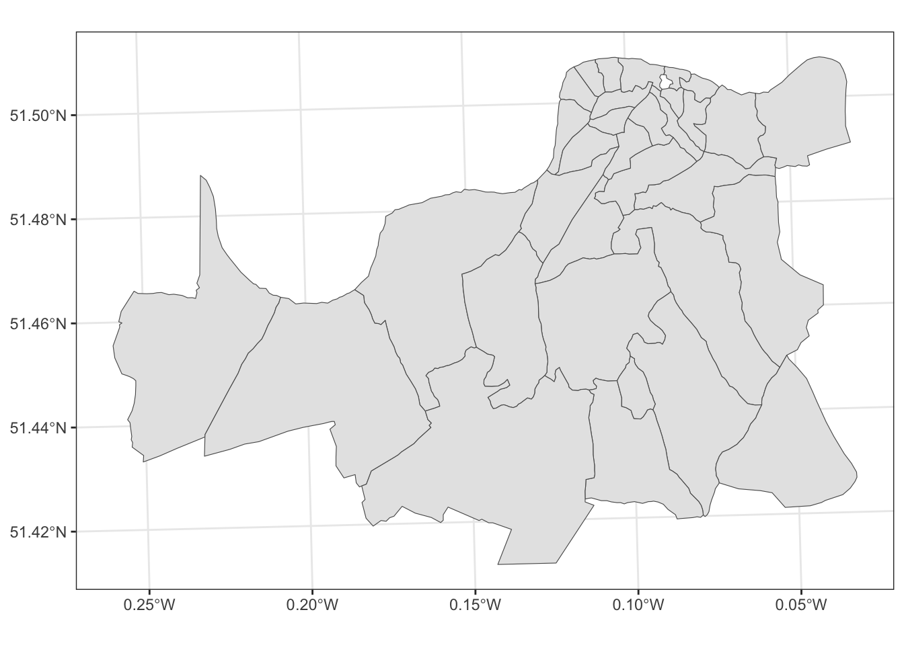
We can color in these areas by the proportion that was served by Southwark & Vauxhall.
ggplot(data = sds) +
geom_sf(aes(fill = perc_sou)) +
theme_bw()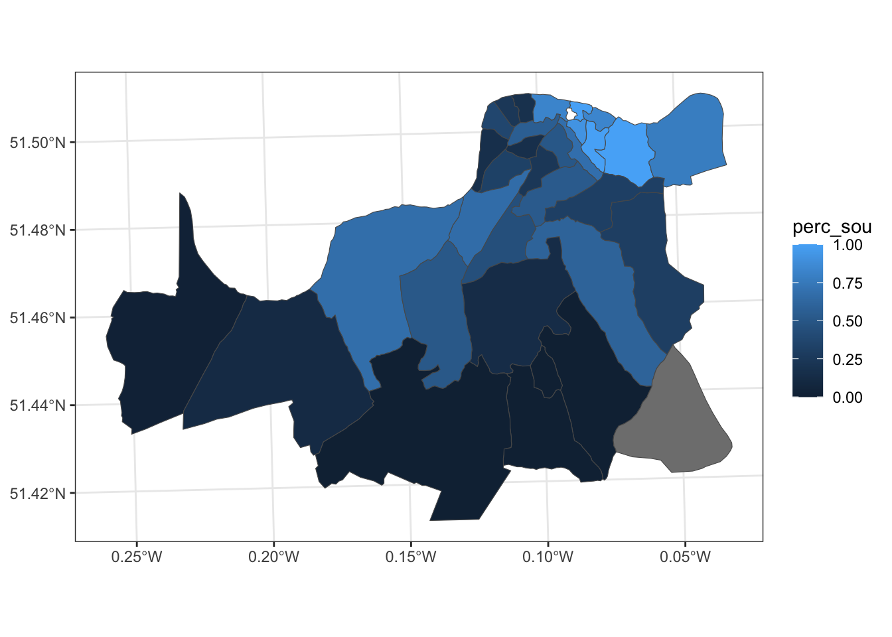
We can also look at the death rate in 1849 (before Lambeth changed the location of its pipes).
ggplot(data = sds) +
geom_sf(aes(fill = rate1849)) +
theme_bw()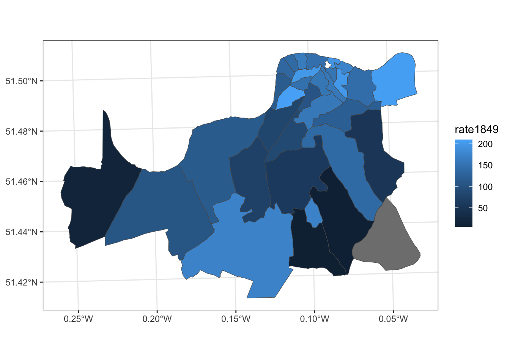
And in 1854, the rate is concentrated in a more specific way.
ggplot(data = sds) +
geom_sf(aes(fill = rate1854)) +
theme_bw()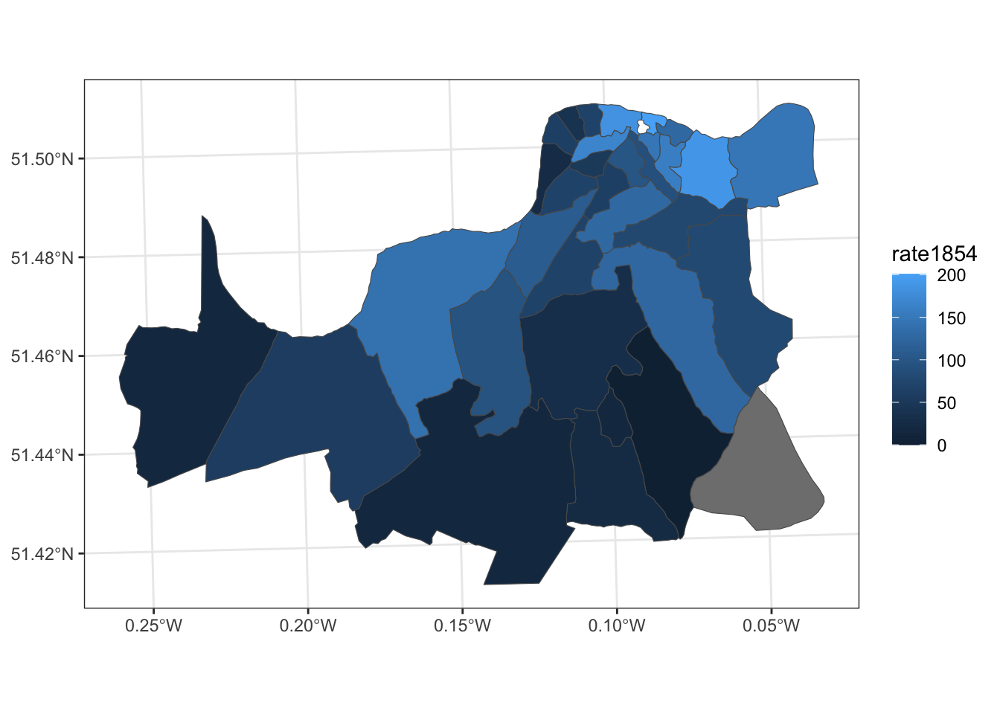
Now, go to your quiz to think about how we can use modern econometric tools (e.g, IV, difference-in-differences) to analyze these data.
12.6 Further Reading
The above information comes from Lovelace, Nowosad, and Muenchow (2021) and Wickham (2016).
12.6.1 References
Lovelace, Robin, Jakub Nowosad, and Jannes Muenchow. 2021. Geocomputation with R. https://bookdown.org/robinlovelace/geocompr/.
Wickham, Hadley. 2016. Ggplot2. Use R! Cham: Springer International Publishing. https://doi.org/10.1007/978-3-319-24277-4.